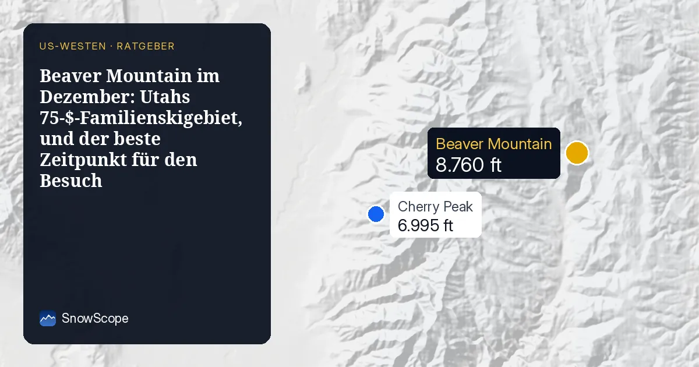

Beaver Mountain im Dezember: Utahs 75-$-Familienskigebiet, und der beste Zeitpunkt für den Besuch
Beaver Mountain fällt in Utah aus einem einfachen Grund auf: ein einziger Erwachsenentarif von 75 Dollar ohne Zuschlag an vollen Tagen. Der Nachteil liegt im Timing. Die Schneegeschichte zeigt, dass Anfang Dezember hier die Decke dünn und unzuverlässig ist; die kluge Wahl ist, bis zur zweiten Dezemberhälfte zu warten.
Die Live-Schneeprognose für Beaver Mountain in der SnowScope-AppSchneehöhen, Pulverschnee-Alarme und 3D-Karte, gratis.
Wo Beaver Mountain liegt
Beaver Mountain liegt an der Spitze des Logan Canyon in Nord-Utah, hoch über der Stadt Logan. Die Karte zeigt 6 Lifte und etwa 31 km Pisten, die von 2.181 m Basishöhe bis 2.670 m zum Gipfel führen. Der Berg hat einen unbescheidenen Charakter: familiengeführt, mit einfachem Ticketschalter und ohne großes Dorf.
Der Höhenunterschied beträgt 490 m, was die Mittelhöhe auf etwa 2.425 m setzt. Diese Zone in der Mittelhöhe ist dort, wo die meisten Skifahrer ihre Zeit verbringen und wo die Schneetiefe früh in der Saison am meisten zählt.

Wann der Dezemberschnee kommt
Beaver Mountains Dezemberfahrplan ist anfangs unerbittlich. In der Mittelhöhe hatten nur 43 Prozent der vergangenen Winter guten Schnee (wöchentlicher Durchschnitt von 50 cm oder mehr) in der ersten Dezemberwoche. Zur Monatsmitte steigt der Anteil auf 54 Prozent, in der dritten Woche auf 61 Prozent und in der Woche vor Weihnachten auf 76 Prozent.
In reinen Zahlen: ein typischer 1. Dezember hat 40 cm in der Mittelhöhe; am 15. Dezember sind es 57 cm, und an Weihnachten 71 cm. In der unteren Basis hat ein typischer 15. Dezember nur 42 cm, und nur jeder dritte Winter erreicht an diesem Datum 50 cm. Ein mageres Winter – jeder zehnte – lässt nur 25 cm in der Mittelhöhe bis Monatsmitte, was Skifahrer auf präparierte Pisten zwingt.

Festpreis in einer Welt der Preissprünge
Für die Saison 2026–27 kostet eine Erwachsenenkarte (Alter 12–69) 75 Dollar den ganzen Tag, jeden Tag. Kein Hochsaisonzuschlag. Das ist selten in Utah, wo die meisten Bergbahnen nun Dynamikpreise nutzen, die steigen, je näher dein Besuch rückt oder auf einen Feiertag fällt.
Wenn du in der Logan-Gegend wohnst, senkt das 10er-Ticket deine Kosten pro Besuch: 720 Dollar am Logan-Büro oder 740 Dollar online. Beaver Mountain nimmt auch am Indy Pass teil: der Indy Base Pass kostet 419 Dollar und beinhaltet zwei Tage an jedem der 300+ Partnerberge mit bestimmten Blackout-Terminen; der Indy+ Pass ist 469 Dollar ohne Blackouts.
Wie es Brighton vergleicht
Brighton in Big Cottonwood Canyon südlich von Salt Lake startet seine Dynamikpreise bei 72 Dollar für frühe Käufer. Nach Schneegeschichte trägt Brighton viel mehr Dezembertiefe: 94 cm in der Mittelhöhe am typischen 15. Dezember, und 89 Prozent der vergangenen Winter überschritten 50 cm an diesem Datum.
Die Wahl hängt von deinen Terminen ab. Beaver Mountain ist die richtige Wahl, wenn du einen garantierten Festpreis willst und nach Mitte Dezember fahren kannst. Brightons höhere Lage und längere Schneeseason machen es sicherer für einen Anfang-Dezember-Trip, doch wirst du mehr zahlen. Für eine Familienreise Ende Dezember mit festem Budget gewinnt Beaver Mountains 75-Dollar-Karte.
Frühjahrsaison ist dünn geworden
Schneetrends hier haben sich verschoben. In den ersten 15 Wintern der Aufzeichnungen (1980–81 bis 1994–95) lag der Durchschnitt in der Mittelhöhe am typischen 15. Dezember bei 66 cm, und 73 Prozent der Winter erreichten bis dahin gute Schneetiefe. In den letzten 15 Wintern (2011–12 bis 2025–26) fiel das auf 43 cm mit nur 33 Prozent der Winter über 50 cm.
Der letzte Winter war besonders mager: nur 26 cm in der Mittelhöhe am 15. Dezember. Dieser Trend unterstreicht, warum Geduld sich auszahlt. Der Berg baut Schnee bis zur Weihnachtswoche zuverlässig auf. Plane deine Reise für Ende Dezember oder später und schaue auf die Karte, bevor du in Logan Canyon fahren gehst.
Am Berg: was du wissen solltest
Logan Canyon (US-89) ist eine steile, kurvenreiche Bergstraße. Bring Schneeketten mit oder wechsle zu Winterreifen, bevor du fährst. Anfangs können Pisten Felsen und Stubben unter dünner Decke verbergen, deshalb halte dich auf präparierten Pisten, bis die Basis dicker wird.
Die höchsten Hänge des Berges über 2.670 m sammeln mehr Schnee und halten ihn länger. Wenn die Bedingungen in der Basis schwach sind, sind die Gipfelpisten deine beste Wahl. Wochentags-Fahrten sind ruhiger und haben oft frischere Corduroys als an Wochenenden.
Tipps für Skifahrer
- Buche deine Reise für den 15. Dezember oder später. Die Chancen auf guten Schnee steigen jede Woche bis zum Monatsende.
- Wenn du in der Nähe von Logan wohnst und oft fährst, kauf das 10er-Ticket oder tritt dem Indy Pass bei, statt täglich zu zahlen.
- Anfang Dezember ist dünn hier: nutze es für eine unverbindliche Wochentags-Fahrt oder als Backup-Plan, wenn ein anderer Berg enttäuscht.
- Bei schlechter Sicht halte dich an markierte Pisten. Anfangsschnee kann Hindernisse verbergen.
- Bring Ketten mit; die Canyonstraße kann nach Schneefall gesperrt werden.
Zu diesen Zahlen
Die Schneehöhen der Skigebiete sind der meiste Schnee in den oberen Hängen am angegebenen Tag; es sind Schätzungen für eine Fläche, keine Messung an einem Punkt. Prognosen können sich ändern. Lies vor dem Freeriden immer den offiziellen Lawinenlagebericht.
Offizielle Lawinenlageberichte: Utah Avalanche Center
Diesen Bericht zitieren
Für Forschung, Lehre oder Presse: Zahlen und Grafiken sind unter CC BY 4.0 mit dieser Quellenangabe frei nutzbar.
SnowScope (2026), Beaver Mountain im Dezember: Utahs 75-$-Familienskigebiet, und der beste Zeitpunkt für den Besuch, https://snowscope.app/blog/de/2026/11/beaver-mountain-utah-december-cheap-skiing.html, abgerufen am 2026-11-15
SnowScope (Atlas Labs). (2026, November 15). Beaver Mountain im Dezember: Utahs 75-$-Familienskigebiet, und der beste Zeitpunkt für den Besuch. SnowScope snow reports. https://snowscope.app/blog/de/2026/11/beaver-mountain-utah-december-cheap-skiing.html
BibTeX
@misc{snowscope2026beavermountainutahdecemb,
author = {{SnowScope (Atlas Labs)}},
title = {Beaver Mountain im Dezember: Utahs 75-$-Familienskigebiet, und der beste Zeitpunkt für den Besuch},
year = {2026},
month = nov,
howpublished = {\url{https://snowscope.app/blog/de/2026/11/beaver-mountain-utah-december-cheap-skiing.html}},
note = {Published 2026-11-15 09:34 UTC; accessed 2026-11-15}
}· CC BY 4.0 · Methoden, Daten und Werkzeuge →
Beaver Mountain: Schnee und Temperatur nach Höhe, dieser Winter vs letzter (Werkzeuge) →
Beaver Mountain folgen
Gratis: eine Nachricht, wenn Neuschnee kommt, und jeden Morgen die Vorhersage.